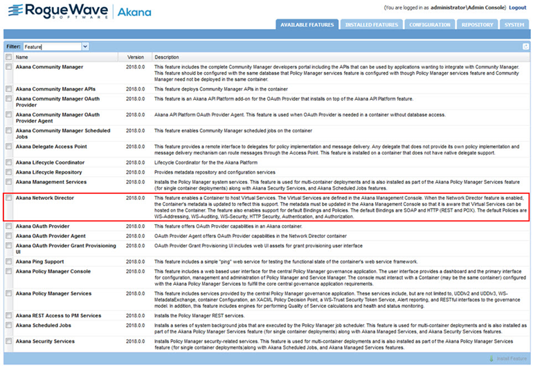
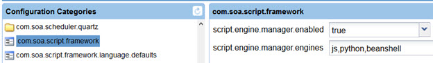
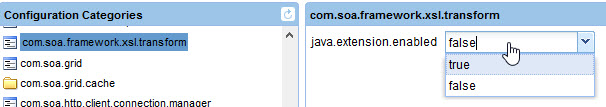
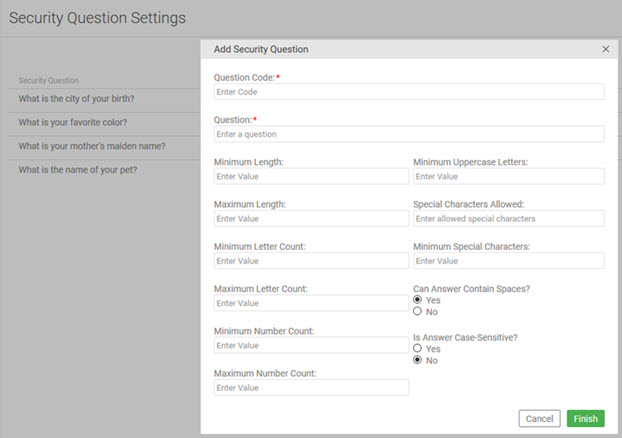

com.soa.atmosphere.forwardproxy -> forward.proxy.allowedHosts=<Network Director Host(s) and/or Load Balancer host>
This document summarizes ways to harden the platform for secure deployments.
Akana is a recognized leader in API Management and SOA Governance Automation solutions. Our platform-independent solution set includes the API Gateway, which is further broken down into Policy Manager, the centralized administration console, and Network Director, an intermediary that integrates with Policy Manager to provide high-performance, scalable API security and management capabilities. The solution also includes Community Manager, which provides a branded developer portal for the consumption of API by the developer.
This document describes the best practices and configuration settings to harden Akana's API Gateway and Community Manager products. For an example of a deployment in a clustered environment, see Sample Deployment Scenario.
There are several best practices that cover the deployment of the product in a hardened environment.
An external HSM keystore can be used in place of the out of the box Policy Manager keystore (database).
API traffic processing should be handled separately from Web traffic and Admin traffic. To this end, the Network Director should not be installed on the same container as Community Manager, or Policy Manager features:

There are two components to this:
To disable the administrative functionality in the Community Manager:
In the Akana Administration Console, configure the following:
com.soa.atmosphere -> atmosphere.config.denyUserRoles=SiteAdmin,BusinessAdmin,ApiAdmin,System Administrator,Security Administrator,Site Administrator
This is accomplished in two places in the product: Firstly, the listeners for the applications in the container are configured from within Policy Manager at Containers > {container_name} > Details > Inbound Listeners. Options for configuring port and PKI are available. Settings for two-way SSL mutual authentication are also available. It is best to choose either Accept client certificates or Require client certificates, based on customer security requirements.
Scope: All Containers
#Config for pm
#Thu Jul 10 23:47:51 PDT 2014
product.home=file\:/Users/example/soa/sm80/
org.eclipse.jetty.server.Request.maxFormContentSize=500000
felix.cm.dir=${felix.cache.rootdir}/cm
org.osgi.service.http.port.secure=9900
com.soa.provision.file.dir=${felix.cache.rootdir}/deploy
product.home.dir=/Users/janemead/soa/b962/sm80
com.soa.snapshot.directory=${felix.cache.rootdir}/snapshot
com.soa.provision.noInitialDelay=true
com.soa.http.host=127.0.0.1
com.soa.http.bind.all=false
com.soa.provision.bundles.start=true
com.soa.provision.poll=2000
org.eclipse.jetty.servlet.SessionCookie=JSESSIONID_pm
felix.shutdown.hook=false
container.name={container_name}
Note above the *.secure syntax used for the settings.
Secondly, the listeners for the applications in the container are configured from within Policy Manager at Containers > {container_name} > Details > Inbound Listeners. Options for configuring port and PKI are available.
As shown above, this is configurable in the system.properties file for each container. The Akana Administration Console (/admin) and the other features installed in the container should ideally be configured on different ports. This will allow you to isolate the Akana Administration Console from the Internet.
Scope: All Containers
To do this, there are four steps.
Sample file:
#Config for pm
#Thu Jul 10 23:47:51 PDT 2016
product.home=file\:/Users/example/soa/sm80/
org.eclipse.jetty.server.Request.maxFormContentSize=500000
felix.cm.dir=${felix.cache.rootdir}/cm
org.osgi.service.http.port.secure=14443
com.soa.provision.file.dir=${felix.cache.rootdir}/deploy
product.home.dir=/Users/janemead/soa/b962/sm80
com.soa.snapshot.directory=${felix.cache.rootdir}/snapshot
com.soa.provision.noInitialDelay=true
com.soa.http.host=10.1.1.2
com.soa.http.bind.all.secure=false
com.soa.provision.bundles.start=true
com.soa.provision.poll=2000
org.eclipse.jetty.servlet.SessionCookie=JSESSIONID_pm
felix.shutdown.hook=false
container.name={container_name}
Modified value for hostname:
com.soa.http.host={localhost}
Modified value for port:
org.osgi.service.http.port.secure=23312
For additional security, you can disable the Admin Console domain as a login domain. This prevents users from logging in via the default domain.
Before disabling the Admin Console domain, make sure you've correctly set up and enabled a valid login domain that users can use, such as an LDAP domain.
For instructions for configuring a security identity provider via the Policy Manager console, refer to: Identity Systems: Configuration Options.
The Administrator for the Akana Administration Console can then assign the System Administrator role for the registry organization to users from the security identity provider, in the console. For instructions, see To Grant Admin Permission (Upgrade documentation).
This section covers settings and tuning parameters relating to hardening, that you can configure in the Admin Console for the container, or at the command line for the container.
To support long passwords when importing PKI from Java Keystores, you will need to install the Java Cryptography Extension (JCE) Unlimited Strength Jurisdiction Policy Files. This is dependent on the JRE version being used and is available from Oracle. To install, copy the US_export_policy.jar and local_policy.jar files to the /lib/security directory for the JRE.
Scope: All Containers
This prevents the product from automatically storing and forwarding any cookies retrieved from the downstream APIs and Services.
Scope: All Containers
In the Akana Administration Console, configure the following:
com.soa.http.client.core -> http.client.params.cookiePolicy=ignoreCookies
This sets the product to only use secure cookies.
Scope: All Containers
In the Akana Administration Console, configure the following:
com.soa.platform.jetty -> session.manager.factory.secureCookies=true
There are no common reasons for supporting client-initiated SSL renegotiation, so wherever possible it's more secure to disable this setting so that it isn't supported.
Scope: All Containers
In the Akana Administration Console, configure the following:
com.soa.platform.jetty -> http.incoming.transport.config.allowRenegotiate=false
Use only stronger cipher suites for SSL
Scope: All Containers
In the Akana Administration Console, configure the following:
com.soa.platform.jetty -> http.incoming.transport.config.cipherSuites=TLS_ECDHE_ECDSA_WITH_AES_256_CBC_SHA384,TLS_ECDHE_RSA_WITH_AES_256_CBC_SHA384,TLS_ECDHE_ECDSA_WITH_AES_128_CBC_SHA256,TLS_ECDHE_RSA_WITH_AES_128_CBC_SHA256,TLS_ECDHE_RSA_WITH_AES_256_GCM_SHA384,TLS_DHE_DSS_WITH_AES_256_GCM_SHA384,TLS_ECDHE_RSA_WITH_AES_128_GCM_SHA256,TLS_DHE_DSS_WITH_AES_128_GCM_SHA256,TLS_DHE_DSS_WITH_AES_256_CBC_SHA256,TLS_DHE_RSA_WITH_AES_128_CBC_SHA,TLS_ECDHE_RSA_WITH_3DES_EDE_CBC_SHA,TLS_ECDHE_RSA_WITH_AES_128_CBC_SHA,TLS_ECDHE_RSA_WITH_AES_256_CBC_SHA,TLS_RSA_WITH_AES_128_CBC_SHA256,TLS_RSA_WITH_AES_256_CBC_SHA256,TLS_RSA_WITH_AES_128_CBC_SHA,TLS_RSA_WITH_AES_256_CBC_SHA
Note: Cipher suites that use AES_256 require installation of the JCE Unlimited Strength Jurisdiction Policy Files. See Java Cryptography Architecture Oracle Providers Documentation for Java Platform Standard Edition 8. This must be added to the JRE.
Depending on the level of security required, you may way to restrict the protocol to TLS 1.2 only. Note - This will limit the accessibility of the platform to certain clients.
The above examples show two options:
In the example below, only TLS v1.2 is enabled. Note that this option is only applicable if you don't have load balancing.
Scope: All Containers
Enable TLSv1.2 only, with no load balancing:
com.soa.platform.jetty -> http.incoming.transport.config.enabledProtocols=TLSv1.2
Note: Cipher suites that use AES_256 require installation of the JCE Unlimited Strength Jurisdiction Policy Files. See Java Cryptography Architecture Oracle Providers Documentation for Java Platform Standard Edition 8. This must be added to the JRE.
In the example below, protocols are limited to TLS v1.2 and one additional protocol needed by the load balancer.
Scope: All Containers
Enable TLSv1.2, with load balancing in place. Some secure load balancers require the SSLv2Helloprotocol, so that needs to be included.
As long as SSL is not enabled, the SSLv2Hello is only used during the initial handshake, and the protocol is not downgraded or renegotiated to use SSLv2 or SSLv3.
com.soa.platform.jetty -> http.incoming.transport.config.enabledProtocols=SSLv2Hello,TLSv1.2
Note: Cipher suites that use AES_256 require installation of the JCE Unlimited Strength Jurisdiction Policy Files. See Java Cryptography Architecture Oracle Providers Documentation for Java Platform Standard Edition 8. This must be added to the JRE.
The example below configures the product to disable SSL v3. Specific TLS protocols are enabled. In this example, SSLv2HELLO is still enabled, for the load balancer.
Scope: All Containers
In the Akana Administration Console, configure the following:
com.soa.platform.jetty -> http.incoming.transport.config.enabledProtocols=SSLv2HELLO,TLSv1,TLSv1.1, TLSv1.2
You may also want to limit the protocols and ciphers the product will use for outbound connections.
Scope: All Containers
Configure the available protocols for outbound connections:
com.soa.http.client.core -> https.socket.factory.enabledProtocols=TLSv1.2
Configure the available cipher suites for outbound connections:
com.soa.http.client.core -> https.socket.factory.cipherSuites=TLS_RSA_WITH_AES_256_CBC_SHA256, TLS_RSA_WITH_AES_256_GCM_SHA384, TLS_ECDHE_RSA_WITH_AES_128_CBC_SHA256
Note: Cipher suites that use AES_256 require installation of the JCE Unlimited Strength Jurisdiction Policy Files. See Java Cryptography Architecture Oracle Providers Documentation for Java Platform Standard Edition 8. This must be added to the JRE.
In the Akana Administration Console, the Administrator can limit the scripting languages supported by the API platform. For example, you could choose not to support Jython. Limiting the supported scripting languages helps close the door on possible malignant efforts to hack the system using those scripting languages.
For maximum security, limit this setting to js only.
The setting is in the Akana Administration Console: Configuration > com.soa.script.framework, as shown below.

By default, all scripting languages supported by the platform are shown, as comma-separated values. To update, remove one or more values and click Apply Changes.
Prevent unauthenticated users from initiating arbitrary internal connections from the Community Manager portal.
Scope: Community Manager Containers
You can prevent forward proxying:
com.soa.atmosphere.forwardproxy -> forward.proxy.allowedHosts=<Network Director Host(s) and/or Load Balancer host>
Values are comma separated.
Prevent the automatic propagation of certain HTTP headers through the Network Director, and also configure a translation of the X-Forwarded-Host header.
Scope: Network Director Containers
In the Akana Administration Console, configure the following:
com.soa.http.client.core ->
block.headers.interceptor.blocked=content-type,content-length,content-range,content-md5,host,expect,keep-alive,
connection,transfer-encoding,atmo-forward-to,atmo-forwarded-from
header.formatter.interceptor.templates=replace=X-Forwarded-Host:{host}
Prevent the automatic propagation of certain HTTP headers through the Network Director, and also configure a NULL (none) translation of the X-Forwarded-Host header.
Scope: Community Manager Containers
In the Akana Administration Console, configure the following:
com.soa.http.client.core -> block.headers.interceptor.blocked=content-type,content-length,content-range,content-md5,host,expect,keep-alive, connection,transfer-encoding header.formatter.interceptor.templates=
You can configure the expiration period and refresh time for the security cache for API calls.
Scope: Network Director Containers
In the Akana Administration Console, optionally configure the following:
com.soa.api.security -> com.soa.api.security.cache.expirationPeriod=3600000 com.soa.api.security.cache.refreshTime=300000
The Anti-Virus Policy scans for files that are uploaded from the Community Manager Portal.
Scope: All Community Manager Containers
In the Policy Manager Console, create an Anti-Virus Operational Policy and configure the policy.

Attach this policy to the ConsoleResourceAPIService and the ContentAPIService in the Policy Manager > Community Manager node in the Policy Manager Console Organization tree.

You can enable and disable CSRF protection in the Policy Manager and Community Manager User Interfaces.
Scope: All Community Manager and Policy Manager Containers
Due to the fact that Policy Manager is not Internet-facing, this setting is disabled by default. You can enable CSRF protection in the Policy Manager in the Akana Administration Console:
com.soa.console.csrf -> org.owasp.csrfguard.Enabled=true
In Community Manager, CSRF configuration is under Administration > Settings > Security:

Cross-site-scripting (XSS) is a way to inject client-side script into Web pages viewed by other users.
Scope: All Community Manager and Policy Manager Containers
To configure any exceptions to the exclusion policy:
com.soa.console.xss -> exceptionURLs=[COMMA DELIMITED LIST]
To configure any new keywords that should be excluded:
com.soa.console.xss -> keywords=[COMMA DELIMITED LIST]
To turn XSS validation on/off:
com.soa.console.xss -> validate=[true|false]
The X-FRAME-OPTIONS header plays a role in determining if and how the user interface can be embedded within an iFrame in a third-party site.
Scope: All Community Manager and Policy Manager Containers
To configure Community Manager:
com.soa.atmosphere.console -> atmosphere.console.config.xFrameOptions=[DESIRED HEADER]
To configure Policy Manager:
com.soa.console.xss -> xFrameOptions=[DESIRED HEADER]
You might want to prevent the Server header from being returned in responses.
Scope: All Community Manager and Policy Manager Containers.
In the Akana Administration Console for each container, configure the following:
com.soa.platform.jetty -> jetty.server.sendServerVersion = false
Note: this property does not exist by default, so you will probably need to add it.
The Metadata API includes details about the container, such as public keys, internal IP addresses and file locations, which you probably don't want to share broadly. This information could potentially aid an attacker in fingerprinting and enumerating the Policy Manager application or discovering how some of the Java servlets are configured.
For additional security, we recommend that you secure this API for all containers. Follow the steps below.
A configuration setting prevents XSLT transformation, by default. This helps protect against malicious attacks.
Scope: All Containers
The configuration setting to prevent XSLT transformation:
com.soa.framework.xsl.transform -> java.extension.enabled=false
In the Akana Administration Console:

By default, this is set to false, to disallow XSLT transformation.
User Account Enumeration occurs when the Community Manager user interface provides direct feedback to a user during the signup and registration processes to the effect that a user account already exists or is already registered. If this is turned off, no useful feedback is provided to the user, minimizing the security risk, but decreasing usability.
Scope: All Community Manager Containers
In Community Manager, User Account Enumeration configuration can be found under Administration > Settings > Security:

Challenge Questions/Answers are often required to increase security around password reset. When signing up to the platform, the user must provide the answer to one or more security questions, if the platform is set up to require them. The user's answers are stored in the database, and the user must answer one or more security questions on demand to perform certain functions such as resetting a password or changing the user profile.
In Community Manager, the Challenge Questions/Answers configuration can be found under Administration > Settings > Users:

Set Enforce Challenge Questions on Login to Enabled.
Additional settings can be found under Administration > Settings > Security:

For each security question set up in the developer portal, as well as specifying the actual question, the Site Admin can configure constraints such as minimum and maximum number of letters, numbers, and special characters allowed or required in the answers, whether answers are case-sensitive, and whether spaces are allowed.
The Site Admin can delete questions; however, if any users have already set up answers to questions that are then deleted, those questions and answers are still available for account verification purposes.
Security question settings can be found under Administration > Settings > Challenges:

Note: In the developer portal, the security challenge feature doesn't allow users to give the same answer twice. This is a precaution against users being lazy and using a default value, which is less secure, rather than setting up authentic answers to the questions.
For more information about configurable settings in the developer portal, see Site Resource Settings (Site Admin help).
User Profile Modification permits a user access to their own profile for modification. In some circumstances, you may wish to prevent this (e.g. when user accounts are pre-provisioned).
Scope: All Community Manager Containers
In Community Manager, User Profile Modification configuration can be found under Administration > Settings > Security:

The account login rules may include many options regarding failure attempts allowed, including account suspension times, and other settings.
Scope: Community Manager
Login policies can be set:

Password requirements (rules) may include many options such as length, characters allowed/required, and password change period.
Scope: Community Manager
Password rules can be set:

If your developer portal hosts APIs that support upload, it's a good idea to attach the HTTP Malicious Pattern Detection Policy to all upload APIs. This provides a layer of protection against upload of malicious content.
For information about this policy, see Using the HTTP Malicious Pattern Detection Policy.